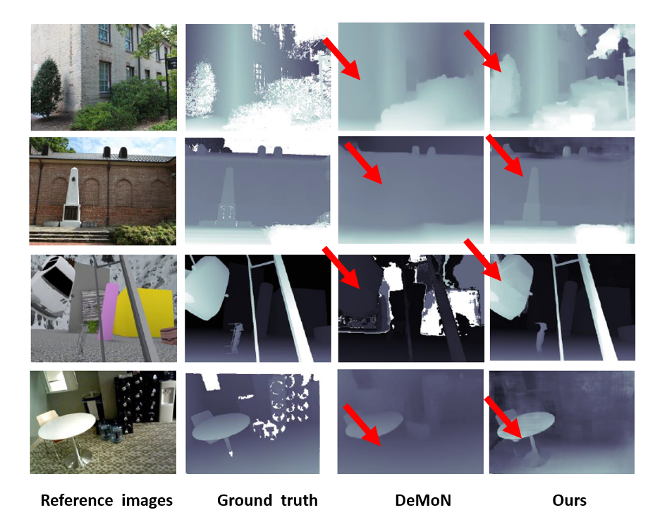

|
Fudan University Google Research Nuro, Inc.
|
Structure from motion (SfM) is an essential computer vision problem which has not been well handled by deep learning. One of the promising trends is to apply explicit structural constraint, e.g. 3D cost volume, into the network. However, existing methods usually assume accurate camera poses either from GT or other methods, which is unrealistic in practice. In this work, we design a physical driven architecture, namely DeepSFM, inspired by traditional Bundle Adjustment (BA), which consists of two cost volume based architectures for depth and pose estimation respectively, iteratively running to improve both. The explicit constraints on both depth (structure) and pose (motion), when combined with the learning components, bring the merit from both traditional BA and emerging deep learning technology. Extensive experiments on various datasets show that our model achieves the state-of-the-art performance on both depth and pose estimation with superior robustness against less number of inputs and the noise in initialization.
|
X. Wei, Y. Zhang, Z. Li, Y. Fu., X. Xue
DeepSFM: Structure From Motion Via Deep Bundle Adjustment ECCV 2020 (Oral). [arXiv] [GitHub] |
|

|
|
|
Results on DeMoN dataset.
|
Results on ETH3D dataset.
|
Video |
Acknowledgements
This project is partly supported by NSFC Projects (61702108), STCSM Projects (19511120700,
and 19ZR1471800), SMSTM Project (2018SHZDZX01), SRIF Program (17DZ2260900), and ZJLab.
We would also like to thank DPSNet. The website is
modified from this template.
|